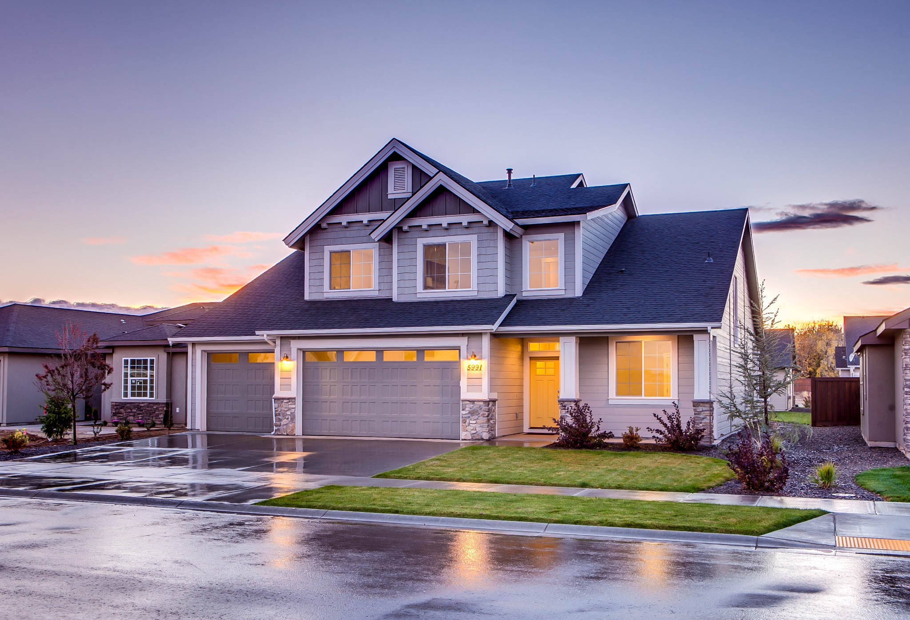
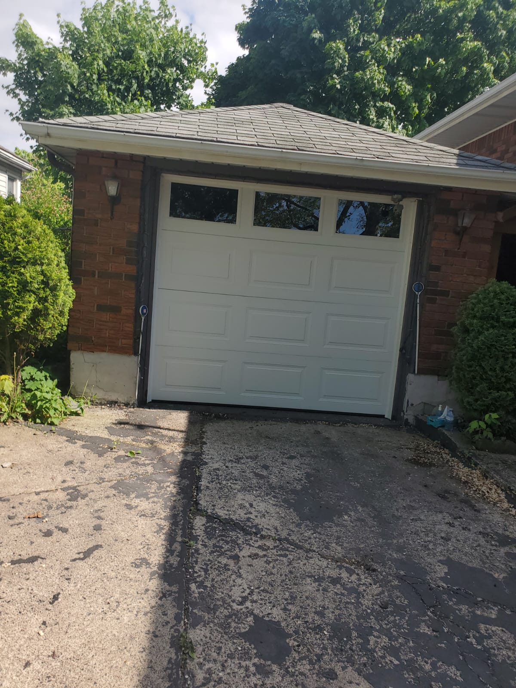
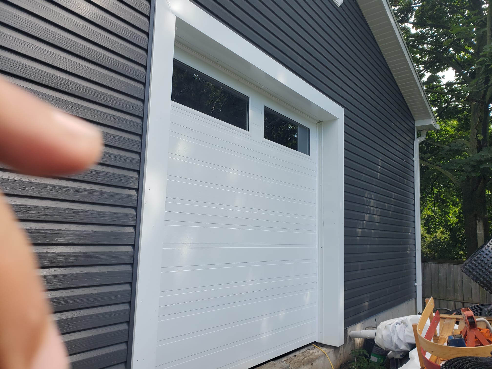
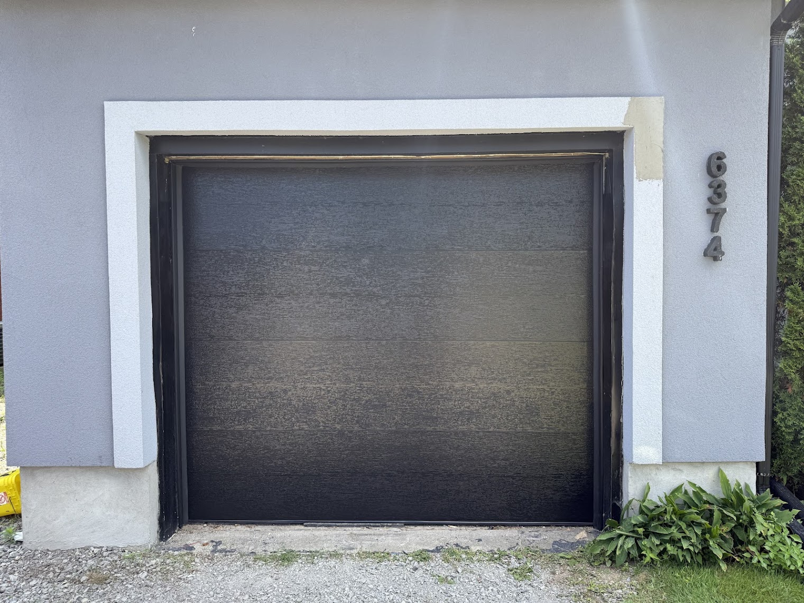
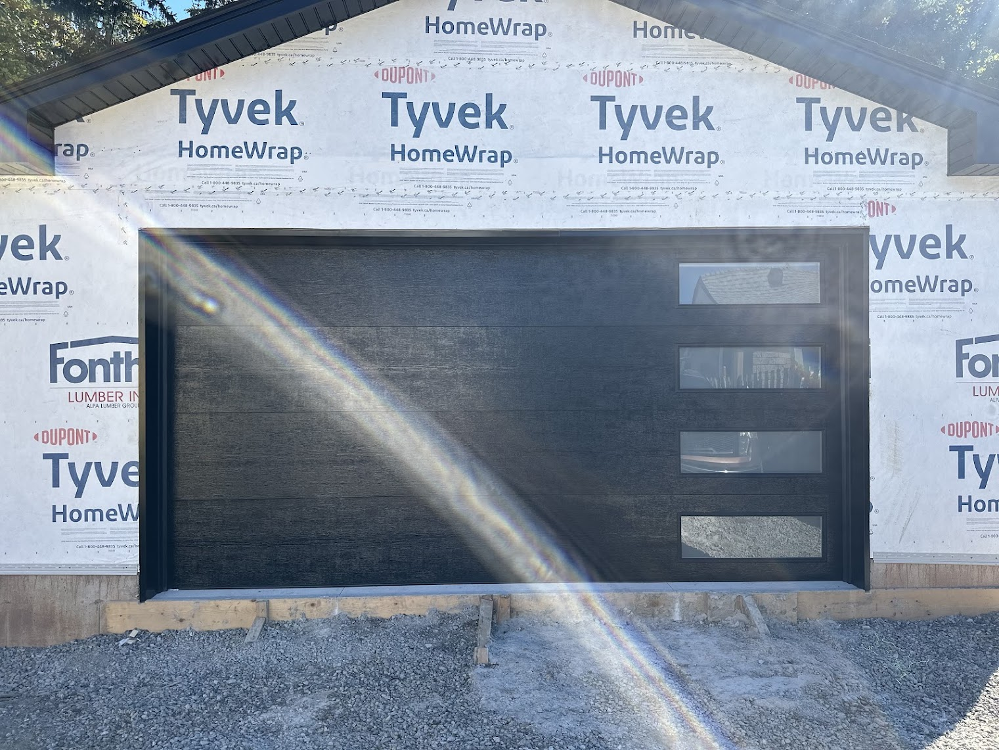
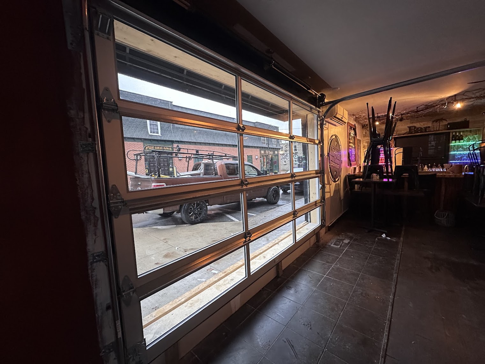
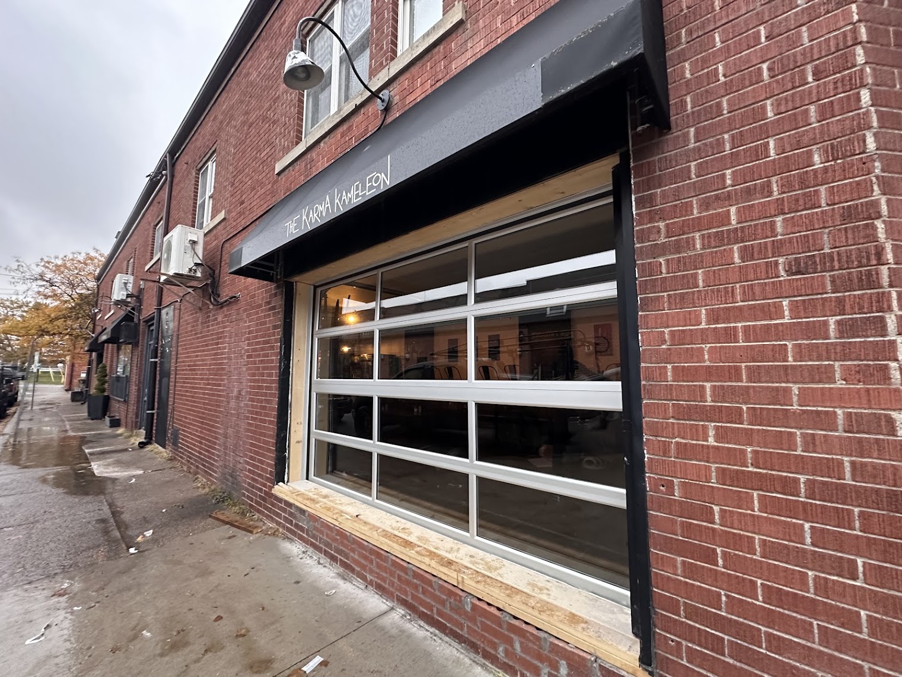

01
▣
Garage Door Sales
Explore garage door options for your home or business and find a style that fits your property.
Ask about a new door →
Garage door sales, installation and repair for homes and businesses across Niagara Region. From broken springs and cables to openers, panels and complete new doors, Acme Garage Doors is ready to help.
Whether you're upgrading the look of your home, replacing a worn-out part or dealing with a garage door that won't move, Acme Garage Doors offers sales, installation and repair services throughout Niagara Region.
Explore garage door options for your home or business and find a style that fits your property.
Ask about a new door →Professional installation for new garage doors, with attention to fit, function and finished appearance.
Plan an installation →Help with garage doors that are noisy, stuck, damaged, misaligned or no longer operating properly.
Call about a repair →Service and replacement options for garage door opener systems to keep your door moving reliably.
Ask about openers →Replace broken or worn garage door springs and restore proper balance and operation.
Get repair help →Garage door cables can wear or break. We provide cable replacement to get your system working again.
Request service →Replace worn rollers to help improve the movement and operation of your garage door.
Request service →Damaged garage door panels don't always mean you need a whole new door. Ask about replacement options.
Ask about panels →Replace worn weather stripping around your garage door to help seal the edges and improve the finished fit.
Request service →Routine maintenance can help keep your garage door operating smoothly and identify wear before it becomes a bigger problem.
Book maintenance →Need garage door help outside regular hours? Contact Acme to discuss your repair needs.
Call Acme now →Garage door solutions and service for commercial properties throughout the Niagara Region.
Discuss commercial service →Explore our dedicated service pages for common garage door needs in Niagara Region.
Repair help for springs, cables, rollers, panels, openers and other common issues.
View repair services →New garage door installation for residential and commercial properties across Niagara.
View installation services →Local repair and maintenance support for homes and businesses in St. Catharines.
View local service →Repair, opener, spring, cable and maintenance services for Welland customers.
View local service →Help when a broken spring leaves your garage door stuck or unsafe to operate.
View spring service →See a few examples of completed garage door installations. Your home or business deserves a door that fits the property and the way you use it.






Acme Garage Doors serves residential and commercial customers throughout Niagara Region with garage door sales, installation, repairs and maintenance.
Our approach is straightforward: understand the problem, explain the available options and provide the garage door service your property needs.
For urgent or after-hours garage door repair needs in Niagara Region, call us directly.
Request a quote or tell us what is happening with your current garage door. For urgent or after-hours repairs, call us directly.
A few common questions about our sales, installation and repair services.
Yes. We provide broken spring replacement and can also inspect related garage door components for wear.
Yes. We provide garage door sales and installation for residential properties, as well as commercial garage door solutions.
Yes. Panel replacement is one of the repair services we offer. Contact us to discuss the damage and available options.
Yes. We provide garage door opener service and replacement options.
Yes. We offer emergency / after-hours repair service. For urgent needs, call 289-783-8146 directly.
We serve Niagara Falls and communities throughout the Niagara Region, including St. Catharines, Welland, Thorold, Fort Erie, Niagara-on-the-Lake and Port Colborne, plus surrounding areas.
Have a great experience with Acme? We'd love to hear from you.
Customers highlight fast response, professional service, clear explanations and careful workmanship.
Recent Google review feedbackHomeowners mention helpful advice, fair pricing and repairs completed efficiently, including urgent spring repairs.
What customers are sayingAcme’s public reviews consistently emphasize responsiveness and a straightforward approach to garage door service.
Niagara customer feedbackNiagara Falls · St. Catharines · Welland · Thorold · Fort Erie · Niagara-on-the-Lake · Port Colborne · Pelham · Fonthill · Wainfleet · Grimsby · Lincoln · Beamsville · and surrounding Niagara communities. Explore garage door repair in Niagara Falls or garage door installation across Niagara.
Call Acme →